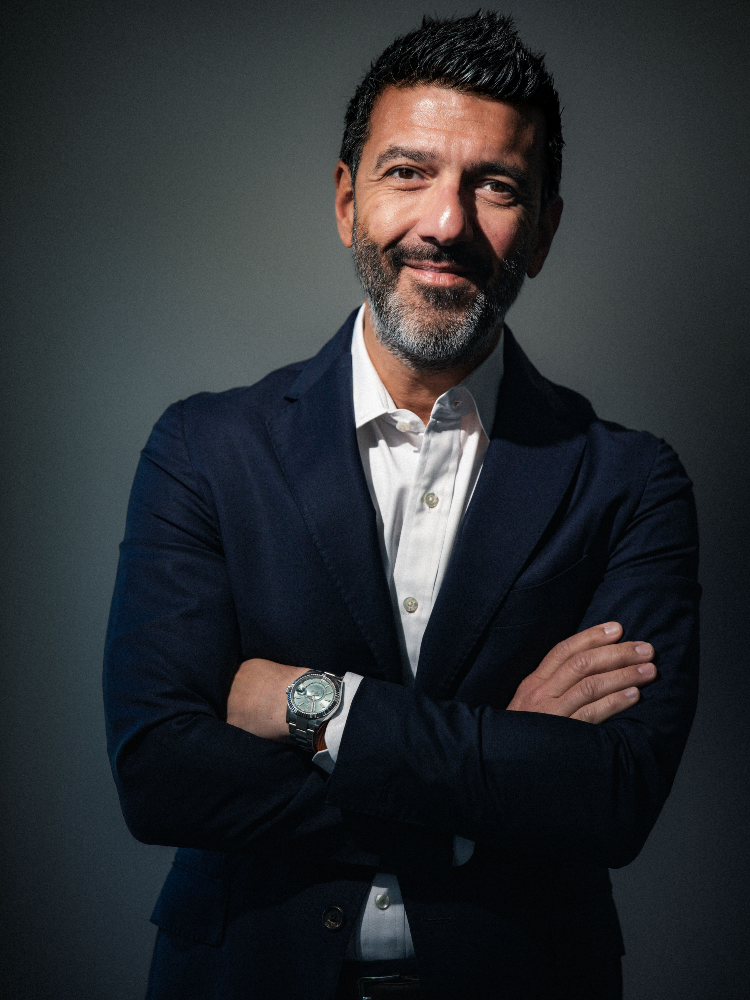

Ep. 11
When Suspicion Meets Strategy: Divorce Law & Investigation
With Jessica Zannetti
split.fm
Apr 14, 2026
20 min

When divorce turns high-stakes, clients turn to Gus Dimopoulos for clarity, strategy, and results.
As managing partner of Dimopoulos Law Firm, Gus is recognized by Super Lawyers, Lawyers of Distinction, and Premier Lawyers of America. With 20+ years of courtroom wins, he’s trusted to handle the most combative cases — often involving mental health challenges, coercive control, addiction, and narcissism. He’s secured sole custody in high-conflict cases and defended clients from unjustified claims. Whether resolving complex financial disputes or de-escalating crises before court, Gus brings unmatched judgment and discretion when your children, future, and peace of mind are at stake.
At Dimopoulos Law, we handle the divorce and custody cases others can’t — high conflict, mental health challenges, addiction, coercive control, financial complexity, and the well-being of children caught in the middle.
Known for strategic litigation and relentless preparation, Gus Dimopoulos is a trusted advocate in and out of the courtroom.
Through his podcast, Split: A Podcast on Modern Divorce, social media presence, and thought leadership, Gus has become a leading voice on the realities of modern family conflict — giving clients clarity, perspective, and fierce representation when the stakes are highest.
In any line of work, there is no greater compliment than the kind words of satisfied clients.
From the moment I met Gus, I knew I was in good hands. He was empathetic, patient when I needed something explained, strong when I felt weak — and my prize fighter in the ring.
 Recording — Studio · NY
Recording — Studio · NY
Beyond the paperwork — expert-driven, thought-provoking, and sometimes unexpectedly funny conversations about what it really means to end a marriage today. Hosted by New York family law attorney Gus Dimopoulos.
Interested in being a guest?Writing, podcasts, and announcements from the firm.
Comprehensive matrimonial and family law representation tailored to every stage of the process — from prenuptial agreements and divorce strategy to custody disputes, high-conflict litigation, appeals, and crisis management. We guide clients through complex personal and legal challenges with clarity, discretion, and experienced advocacy.
We represent clients in the dissolution of marriage, including the management of complex valuations and equitable distribution of closely held businesses, professional practices, investment portfolios, trusts, real estate holdings, and more.
Read more → 02Strategic counsel and advocacy for parents navigating the complex and emotionally charged issues of custody, parenting time, decision-making, and co-parenting before and after divorce.
Read more → 03Expert counsel and strategic insight on child support matters, including high-income and above-guideline cases, focused on protecting children’s needs, preserving lifestyle considerations, and creating sustainable financial outcomes.
Read more → 04Counsel and advocacy on spousal maintenance and alimony matters, focused on achieving fair, sustainable financial outcomes that reflect the realities of the marriage and support long-term stability after divorce.
Read more →Have a question we don’t answer here?
Call us: 914-472-4242
Tell us what you are facing. We’ll respond within one business day.
Prior results do not guarantee a similar outcome.